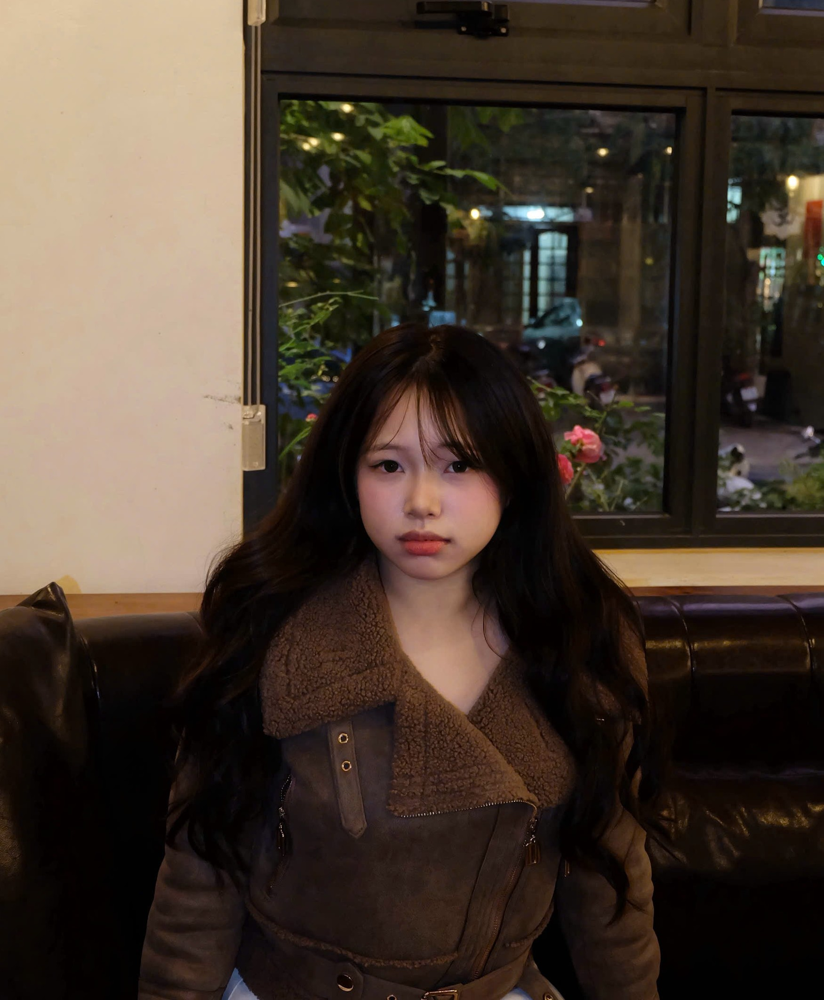

Kiều Minh Huệ
Chào mừng thầy cô và các bạn ghé thăm không gian lưu trữ số của mình! Mình tin rằng thế giới ngôn ngữ học không hề xa rời sự phát triển của công nghệ. Ngược lại, ngôn từ có thể bay bổng, uyển chuyển hơn khi cộng hưởng nhịp nhàng cùng các ứng dụng số hiện đại. Trang Portfolio này là cuốn nhật ký tổng hợp, ghi lại trọn vẹn hành trình từ những bước bỡ ngỡ ban đầu cho đến khi tự tin làm chủ công nghệ của mình qua môn học "Nhập môn Công nghệ số & Ứng dụng Trí tuệ nhân tạo".
Mục Tiêu Thiết Lập Portfolio
Hệ thống hóa kiến thức học tập và khẳng định bản sắc cá nhân trong kỷ nguyên số.
Sứ mệnh học tập
Lưu trữ và trình bày trực quan các sản phẩm thực hành từ Bài 1 đến Bài 6. Qua đó, rèn luyện kỹ năng biên tập, tinh chỉnh nội dung bằng Canva, CapCut và các công cụ cộng tác trực tuyến nhằm xây dựng một hồ sơ năng lực cá nhân toàn diện cho tương lai.
Sáng tạo nhân văn
Chứng minh khả năng dung hòa giữa tư duy logic của máy tính và chiều sâu cảm xúc của con người. Thực hành ứng dụng Trí tuệ nhân tạo có đạo đức, giữ gìn cá tính sáng tạo và giọng điệu cá nhân độc bản trong từng sản phẩm truyền thông đa phương tiện.
Hành Trình Dự Án
Nơi lý thuyết tìm thấy hình hài thực tế thông qua 6 nấc thang kỹ năng số
Thao tác cơ bản với tệp tin và thư mục trên macOS
Mục tiêu thực hành
Xây dựng tư duy tổ chức dữ liệu khoa học, rèn luyện kỹ năng quản trị tệp tin và thư mục bài bản trên hệ điều hành macOS (Finder). Đây là bước nền tảng giúp tối ưu hóa không gian làm việc số cá nhân.
Tiến trình thực hiện chi tiết (Đầy đủ 12 bước)
- Bước 1: Mở trình quản lý Finder: Nhấp vào biểu tượng Finder (mặt cười xanh trắng) ở Dock hoặc nhấn Cmd + Space nhập Finder rồi ấn Return để mở cửa sổ làm việc.
- Bước 2: Truy cập thư mục Documents: Ở cột điều hướng bên trái (Sidebar), nhấn chọn mục Tài liệu (Documents). Nếu muốn xem toàn bộ các ổ đĩa, dùng tổ hợp phím Cmd + Shift + C.
- Bước 3: Tạo thư mục chính: Nhấp chuột phải (hoặc chạm đồng thời hai ngón tay lên Trackpad), chọn lệnh New Folder, tiến hành nhập tên thư mục không dấu ThucHanh_KieuMinhHue và nhấn Return.
- Bước 4: Truy cập vào thư mục vừa tạo: Di chuyển chuột và nhấp đúp vào thư mục ThucHanh_KieuMinhHue vừa được đặt tên để sẵn sàng thao tác bên trong.
- Bước 5: Khởi chạy TextEdit tạo tệp tin: Nhấn tổ hợp Cmd + Space, nhập từ khóa "TextEdit" và nhấn Return để mở trình soạn thảo văn bản thô mặc định của hệ thống.
- Bước 6: Lưu tệp tin: Nhấp đúp vào thanh tiêu đề "Không có tiêu đề", nhập tên tệp là GhiChu, chọn mục "Địa điểm" lưu trữ là thư mục ThucHanh_KieuMinhHue đã tạo, sau đó nhấn Di chuyển (Move) để lưu tệp dưới định dạng GhiChu.txt.
- Bước 7: Đổi tên tệp tin chuẩn hóa: Quay lại thư mục chính, chọn tệp GhiChu.txt, nhấn phím Return để hiện khung sửa chữ màu xanh, nhập tên mới là GhiChuQuanTrong.txt và gõ Return lần nữa để xác nhận lưu.
- Bước 8: Tạo cấu trúc thư mục con: Bên trong không gian làm việc chính, nhấn tổ hợp phím tắt nhanh Shift + Cmd + N, nhập tên thư mục con là TaiLieu rồi nhấn Return.
- Bước 9: Sao chép tệp tin (Copy & Paste): Chọn tệp GhiChuQuanTrong.txt, nhấn tổ hợp phím Cmd + C để sao chép. Tiếp theo, nhấp đúp để vào thư mục con TaiLieu và nhấn tổ hợp Cmd + V để thực hiện dán bản sao.
- Bước 10: Thao tác di chuyển tệp tin (Cut & Paste): Quay lại thư mục chính, dùng TextEdit tạo thêm tệp mới tên là DiChuyen.txt. Chọn tệp này, nhấn Cmd + C, truy cập tiếp vào thư mục con TaiLieu, nhấn tổ hợp phím đặc biệt Option + Cmd + V để dán tệp tin đồng thời xóa hẳn tệp gốc ở ngoài.
- Bước 11: Xóa tệp vĩnh viễn không qua Thùng rác: Nhấp chọn tệp tin nháp DiChuyen.txt nằm bên trong thư mục con TaiLieu, nhấn tổ hợp phím Option + Cmd + Delete. Hệ thống sẽ hiển thị bảng cảnh báo, chọn xác nhận Delete để xóa vĩnh viễn tệp tin khỏi ổ cứng ngay lập tức.
- Bước 12: Khôi phục tệp từ Thùng rác: Nhấp chọn biểu tượng Thùng rác (Trash) ở thanh Dock, tìm kiếm tệp tin GhiChuQuanTrong.txt, nhấp chuột phải chọn lệnh Khôi phục (Put Back) để đưa tệp tự động khôi phục và trả về đúng thư mục con TaiLieu ban đầu.
Chiêm nghiệm cá nhân
"12 bước thao tác kỹ thuật số cơ bản này giúp mình nhận ra tầm quan trọng của việc quản trị tài nguyên thông tin. Sự ngăn nắp trên máy tính phản chiếu trực tiếp sự mạch lạc và khoa học trong tư duy làm việc của một sinh viên ULIS."
Tìm kiếm và đánh giá độ tin cậy của thông tin học thuật
Đề tài & Phạm vi tìm kiếm
Chủ đề: "Sự biến đổi biến thể ngôn ngữ và hành vi giao tiếp của sinh viên Việt Nam dưới tác động của làn sóng Hallyu".
Phạm vi: Tìm kiếm các công trình khoa học công bố trong giai đoạn 2020-2025 trên các hệ thống cơ sở dữ liệu lớn bao gồm Google Scholar, Microsoft Academic và thư viện điện tử của các trường Đại học chuyên ngành Khoa học Xã hội và Nhân văn.
Quy trình tìm kiếm & Phân loại đánh giá nguồn tin
Để thu thập được 12 nguồn tài liệu chất lượng cao phục vụ cho báo cáo học thuật, mình đã xây dựng bộ cú pháp tìm kiếm có logic chặt chẽ như sử dụng dấu ngoặc kép ép buộc từ khóa chuẩn, toán tử AND/OR. Sau đó, mình phân loại và lập ma trận đánh giá độ tin cậy của nguồn tin theo thang điểm 5:
- Nhóm Tạp chí khoa học chuyên ngành: Đánh giá độ tin cậy tuyệt đối (5/5) nhờ quy trình phản biện kín nghiêm ngặt trước khi xuất bản. Tài liệu cung cấp dữ liệu thực chứng định lượng sắc bén, dù đôi khi có độ trễ nhất định với các từ lóng mới nổi của giới trẻ do khâu biên tập mất nhiều thời gian.
- Nhóm Sách chuyên khảo và Giáo trình: Đánh giá độ tin cậy tối đa (5/5), đóng vai trò cột trụ lý thuyết vững chắc cho nghiên cứu. Nhược điểm là khả năng cập nhật các biến thể ngôn ngữ mạng phát sinh không nhanh nhạy bằng các bài báo hay báo cáo thường niên.
- Nhóm Luận văn Thạc sĩ và CSDL Thư viện: Đánh giá độ tin cậy cao (4/5) vì là công trình nghiên cứu sau đại học đã qua bảo vệ. Điểm mạnh là đi sát vào thực tế tâm lý và hành vi của sinh viên, nhưng nhược điểm là tính phổ quát chưa cao do mẫu khảo sát giới hạn tại một cơ sở đào tạo nhất định.
- Báo cáo quốc tế và Nguồn mở Internet: Đánh giá độ tin cậy khá (4/5), cung cấp số liệu vĩ mô rất rộng bằng kỹ thuật Big Data trên các nền tảng xuyên quốc gia, tuy nhiên lại thiếu phân tích chuyên sâu về khía cạnh ngôn ngữ học thuần túy.
Case Study tiêu biểu & Minh họa số liệu
Hành trình "bản địa hóa" của danh từ "Oppa" (오빠) tại Việt Nam:
Nghiên cứu chỉ ra từ "Oppa" gốc Hàn dựa trên tôn ti tuổi tác và giới tính rõ rệt, khi du nhập vào Việt Nam đã trải qua ba giai đoạn biến đổi ngữ nghĩa: từ danh từ riêng gọi thần tượng (Idol) -> chuyển thành danh từ chung chỉ người yêu -> và cuối cùng biến thành một thán từ mang sắc thái nũng nịu hoặc châm biếm trên mạng xã hội.
Số liệu minh họa: Theo báo cáo thống kê từ Korea Foundation năm 2023, tỷ lệ sử dụng từ mượn tiếng Hàn (Daebak, Aegyo, Mukbang) trong cộng đồng sinh viên Việt Nam tăng trưởng đều đặn 15% mỗi năm trong giai đoạn 2020-2025.
Kỹ thuật Prompt Engineering trong học tập và nghiên cứu
Mục tiêu thực hành
Làm chủ kỹ thuật viết câu lệnh S.M.A.R.T Prompt để khai thác hiệu quả các mô hình ngôn ngữ lớn (AI), tối ưu hóa thời gian xử lý thông tin và thiết kế tài liệu ôn tập cá nhân.
3 Thử nghiệm thực tế chi tiết
- Tác vụ 1: Tóm tắt tài liệu học thuật chuyên sâu.
Prompt cơ bản: "Tóm tắt đoạn văn bản sau cho tôi."
Prompt cải tiến: "Tóm tắt văn bản dưới đây trong 5 gạch đầu dòng, tập trung vào phương pháp và kết quả nghiên cứu."
Prompt S.M.A.R.T nâng cao (Role-Playing + CoT): "Bạn là một biên tập viên tạp chí khoa học uy tín. Hãy đọc tài liệu đính kèm và thực hiện theo quy trình: Bước 1: Liệt kê 3 từ khóa quan trọng nhất. Bước 2: Tóm tắt lập luận của tác giả trong 150 chữ. Bước 3: Chỉ ra một điểm hạn chế hoặc câu hỏi mở mà nghiên cứu này chưa giải quyết được."
- Tác vụ 2: Giải thích khái niệm trừu tượng (Rối lượng tử).
Prompt nâng cao (Metaphor + Persona): "Hãy đóng vai Richard Feynman, một nhà vật lý có tài giảng thuật xuất sắc. Hãy giải thích 'Rối lượng tử' cho một đứa trẻ 10 tuổi bằng cách sử dụng phép ẩn dụ về 'đôi tất ma thuật' hoặc 'đồng xu liên kết'. Cuối cùng, hãy đưa ra một câu chốt đơn giản nhất để ghi nhớ."
- Tác vụ 3: Thiết kế câu hỏi ôn tập có phân hóa (Điện Biên Phủ).
Prompt nâng cao (Few-shot + Bloom Taxonomy): "Bạn là một chuyên gia khảo thí lịch sử. Hãy tạo 3 câu hỏi trắc nghiệm về Chiến dịch Điện Biên Phủ theo 3 mức độ nhận thức: Nhận biết (Ngày tháng/Nhân vật), Thông hiểu (Ý nghĩa chiến thuật chuyển từ 'Đánh nhanh, thắng nhanh' sang 'Đánh chắc, tiến chắc'), và Vận dụng cao (Bài học lịch sử cho công cuộc bảo vệ Tổ quốc hôm nay). Trình bày rõ: Câu hỏi, 4 đáp án, Đáp án đúng và Giải thích chi tiết tại sao các phương án còn lại sai."
Bài học rút ra
"Khi áp dụng công thức S.M.A.R.T Prompt (Specific - Measurable - Assign a Role - Relevant Context - Thought Process), kết quả trả về của AI có độ chính xác, logic vượt trội và hoàn toàn triệt tiêu được hiện tượng 'ảo giác AI' (AI hallucination)."
Ứng dụng công cụ hợp tác trực tuyến trong dự án nhóm
Dự án nhóm thực hiện
Dự án: "Xây dựng Website giới thiệu du lịch Đà Nẵng" nhằm cung cấp thông tin trải nghiệm thực tế về danh thắng, ẩm thực, văn hóa địa phương.
Thành viên nhóm: Trần Minh Đức, Lê Thu Hà, Kiều Minh Huệ, Hoàng Quân.
Vai trò của Huệ: Thu thập và tổng hợp tài liệu học thuật, biên soạn nội dung website, quản lý tiến độ cá nhân và hỗ trợ kết nối, phối hợp giữa các thành viên.
Hệ thống công cụ & Quy tắc quản lý số
- Quản lý dự án (Notion): Thiết lập không gian làm việc chung, trực quan hóa toàn bộ tiến độ phân chia công việc (Thu thập tài liệu, Viết nội dung trang chủ, Kiểm tra và chỉnh sửa nội dung...) bằng mô hình Kanban từ To Do sang Done.
- Soạn thảo tài liệu cộng tác (Google Docs): Các thành viên cùng nhau biên soạn nội dung chi tiết theo thời gian thực. Sử dụng tính năng Version History để kiểm soát lịch sử đóng góp của từng cá nhân nhằm duy trì sự minh bạch.
- Lưu trữ tài nguyên tập trung (Google Drive): Cấu trúc sơ đồ cây thư mục nhiều cấp khoa học bao gồm: Du_an_Website_Du_Lich_Da_Nang / 01_Tai_lieu; 02_Noi_dung; 03_Hinh_anh (thư mục con chứa ảnh Bà Nà Hills, Cầu Vàng, Sơn Trà); và 04_Bao_cao (với file đầu ra: BaoCao_CaNhan.docx). Thiết lập quy tắc đặt tên tệp thống nhất: TaiLieu_ThongTin_DaNang.pdf.
- Giao tiếp nhóm (Discord): Xây dựng các kênh chat văn bản và voice để thảo luận nhanh chóng, đạt hơn 10 lượt tương tác thảo luận nhóm chất lượng mỗi tuần.
Thách thức & Giải pháp thực tế
Khó khăn 1: Khó theo dõi sát sao tiến độ hoàn thành của từng thành viên. -> Giải pháp: Cài đặt cứng deadline và cập nhật trạng thái liên tục trên Notion.
Khó khăn 2: Nội dung dễ bị trùng lặp, mâu thuẫn khi nhiều người cùng nhảy vào chỉnh sửa một trang Google Docs. -> Giải pháp: Chia nhỏ và phân quyền phụ trách từng đề mục, kiểm soát chặt thay đổi qua lịch sử phiên bản.
Khó khăn 3: Tài liệu ảnh và file báo cáo bị phân tán, dễ thất lạc. -> Giải pháp: Áp đặt quy tắc đặt tên tệp và sơ đồ cây thư mục nghiêm ngặt trên Google Drive.
Sáng tạo nội dung với AI tạo sinh hỗ trợ
Sản phẩm sáng tạo
Bài viết Blog chuyên sâu dài 1.500 từ: "Bẫy chi tiêu tuổi 18: Khi 'Tự do tài chính' bắt đầu bằng tiếng 'tinh tinh' cháy túi".
Mô hình Hợp tác Người - Máy chi tiết
- Giai đoạn 1: Nghiên cứu nội dung & Lập dàn ý (Google Gemini)
Hạn chế của AI: Văn phong Gemini ban đầu trả về rất sáo rỗng, rập khuôn, mang giọng điệu giáo điều như "chúng ta cần phải làm gì", "hệ quả tất yếu của vấn đề". Các ví dụ chi tiêu đưa ra mang tính lý thuyết chung chung không sát với đời sống sinh viên Việt Nam.
Sự tinh chỉnh của con người (Huệ đóng góp >50%): Mình giữ lại bộ khung lập luận logic của AI, nhưng thay đổi hoàn toàn sang văn phong gần gũi, chia sẻ của một người đi trước xưng "em", "mình". Lồng ghép các thuật ngữ thực tế của giới trẻ như "săn sale Shopee", "chốt đơn", "đi lượn sập sình" và áp lực "peer pressure" khi thấy bạn bè dùng đồ công nghệ đắt tiền.
- Giai đoạn 2: Tạo hình minh họa độc quyền (DALL-E 3)
Prompt thiết kế: "An Asian university freshman student sitting at a desk looking stressed at their laptop, a credit card and shopping bags in the background, cinematic lighting, 3D claymation style, soft pastel colors, clean and modern visual, high resolution --ar 16:9".
Sự tinh chỉnh của con người: AI tạo ra bức ảnh bạn trẻ ôm đầu rất thương nhưng màu sắc có vài chi tiết chữ bị nhòe. Mình đưa ảnh vào các ứng dụng để cắt cúp lại đúng tỷ lệ vàng và tăng độ tương phản màu sắc hài hòa với bài viết.
- Giai đoạn 3: Đồng bộ visual & Thiết kế layout bìa (Canva AI)
Hạn chế của AI: Các tính năng Canva AI tự động chèn chữ thường bị lỗi font tiếng Việt rất nghiêm trọng (mất dấu hoặc lỗi hiển thị các ký tự đặc biệt 'đ', 'ê', 'ơ'). Khoảng cách chữ thô kệch, rời rạc làm mất tính thẩm mỹ.
Sự tinh chỉnh của con người: Mình tự tay thiết kế typography thủ công, lựa chọn font hỗ trợ tiếng Việt tốt là Montserrat. Mình thu hẹp khoảng cách dòng (Line spacing) và chữ (Letter spacing), đổi sang sắc màu đối lập và thêm hiệu ứng nổi khối "Lift" để tiêu đề "Bẫy chi tiêu tuổi 18" hòa hợp nghệ thuật nhất với nền ảnh đất sét.
Chiêm nghiệm học thuật
"Trong sản xuất nội dung, AI đóng vai trò cực tốt ở vị trí 'người vạch lối' giúp rút ngắn 80% thời gian nghiên cứu tài liệu thô. Tuy nhiên, AI hoàn toàn bất lực trong việc tạo ra 'sự thấu cảm' (Empathy) và 'giọng điệu cá nhân' (Voice). Sáng tạo đòi hỏi những câu chuyện có tính kết nối con người — điều mà thuật toán chưa thể chạm tới."
Sử dụng AI có trách nhiệm trong học tập và nghiên cứu
Dự án thực hiện
Chiến dịch nội dung đa phương tiện học thuật: "Hành trình chạm vào K-R&B".
Ý tưởng cốt lõi: Ứng dụng các công cụ công nghệ số để biến những kiến thức ngôn ngữ học thuật khô khan trở nên mềm mại, gần gũi hơn qua lăng kính âm nhạc Korean R&B đô thị.
Các sản phẩm đầu ra đã thực hiện
- Infographic phân tích kiến thức ngôn ngữ (Canva): Bóc tách ngữ pháp và 3 từ lóng thực tế trong lời ca khúc của nghệ sĩ R&B nổi tiếng, đối chiếu trực tiếp với giáo trình New Yonsei để sinh viên thấy rõ sự khác biệt giữa văn viết học thuật và văn nói đời thường.
- Poster truyền thông phong cách Neo-retro: Thiết kế tông tối cổ điển sang trọng, tích hợp hình ảnh nghệ sĩ và trích dẫn song ngữ Hàn - Việt ý nghĩa về tình yêu và tuổi trẻ nhằm kích thích thị giác.
- Video ngắn thuyết minh phân tích phát âm (CapCut PC): Video thời lượng 2 phút 30 giây phân tích hiện tượng luyến âm, nuốt chữ đặc trưng của khẩu ngữ thực tế. Mình đã ứng dụng sâu tính năng giảm nhiễu tiếng ồn (Noise Reduction) để làm sạch giọng đọc thuyết trình trên nền nhạc R&B êm dịu.
Đạo đức AI & Sự trung thực học thuật
"Sử dụng AI có trách nhiệm là ranh giới sống còn của học thuật. Trong suốt dự án, mình tuân thủ nghiêm ngặt 3 nguyên tắc vàng:
1. Tính trung thực (Authenticity): Chỉ dùng AI để khơi mở ý tưởng và thiết kế layout, tuyệt đối không sao chép nguyên bản văn bản AI vào bài viết.
2. Chống định kiến (Mitigating Bias): AI thường mặc định sinh viên tiêu hoang là do đua đòi lười biếng. Mình đã dùng tư duy phản biện ngôn ngữ để cân bằng lại nội dung, bảo vệ tính khách quan của bài phân tích.
3. Bảo vệ bản quyền: Đảm bảo ghi công đầy đủ nguồn tài liệu tham khảo và sử dụng hình ảnh minh họa có giấy phép rõ ràng."
Chiêm Nghiệm Cuối Hành Trình
Hạt mầm số nảy nở trên mảnh đất ngôn từ và tâm hồn nhân văn
Thuận lợi & Cơ hội trải nghiệm:
Việc được tiếp cận với các công cụ công nghệ số hiện đại mang lại cho mình cơ hội tuyệt vời để số hóa kiến thức ngôn ngữ học. Nhờ Notion, mình rèn luyện được thói quen quản trị thời gian chặt chẽ và triệt tiêu hoàn toàn thói quen trì hoãn công việc. Google Docs, Drive và Canva giúp tối ưu hóa sức mạnh của làm việc nhóm từ xa, biến những tài nguyên rời rạc thành một chuỗi xích logic đầy thẩm mỹ.
Khó khăn & Thách thức vượt qua:
Khó khăn lớn nhất nằm ở rào cản kỹ thuật ban đầu, đặc biệt là lỗi xung đột phông chữ tiếng Việt trên Canva và việc kiểm soát tạp âm khi ghi âm bài giảng trên phần mềm CapCut. Hơn thế nữa, việc đứng trước sự tiện lợi của Trí tuệ nhân tạo (AI) đòi hỏi bản thân phải giữ vững được bản lĩnh tự chủ, tránh sa vào cái bẫy 'lười biếng tư duy' hay bê nguyên bản văn thô của máy vào các sản phẩm nghiên cứu của mình.
Bài học kinh nghiệm vô giá:
Công nghệ số và AI là những người đầy tớ xuất sắc nhưng sẽ là một người chủ tồi. Bài học lớn nhất mình rút ra là tầm quan trọng của việc đồng bộ hóa nội dung đa phương tiện và tư duy phản biện ngôn ngữ học. Công cụ chỉ làm đẹp bề ngoài, chính tâm hồn nhân văn, sự thấu cảm sâu sắc và tri thức thực thụ của con người mới là thứ thổi hồn cho tác phẩm truyền thông số bay xa.
Trí tuệ nhân tạo là chất xúc tác,
Trí tuệ con người mới là linh hồn.
Cảm ơn thầy cô và các bạn đã đồng hành cùng Huệ trong suốt chặng đường qua. Hy vọng những chia sẻ chi tiết này sẽ tiếp thêm chút động lực tự học và sáng tạo số cho tất cả chúng ta!